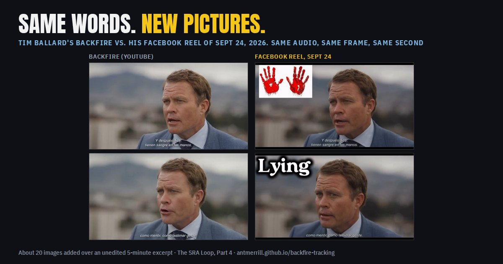
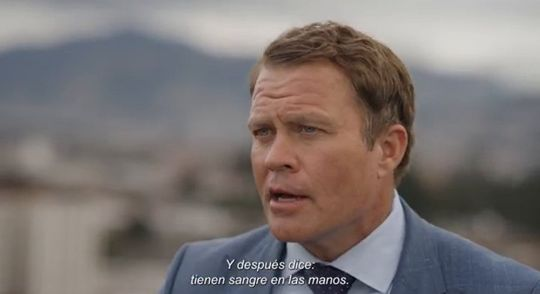
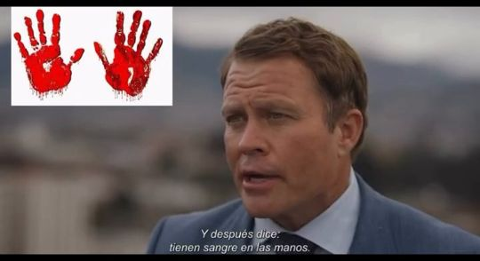
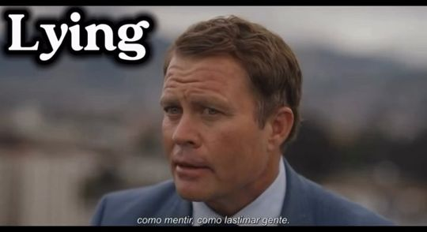
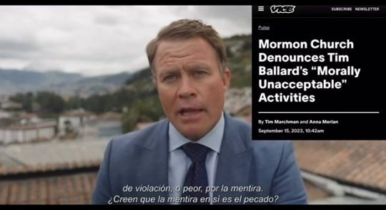
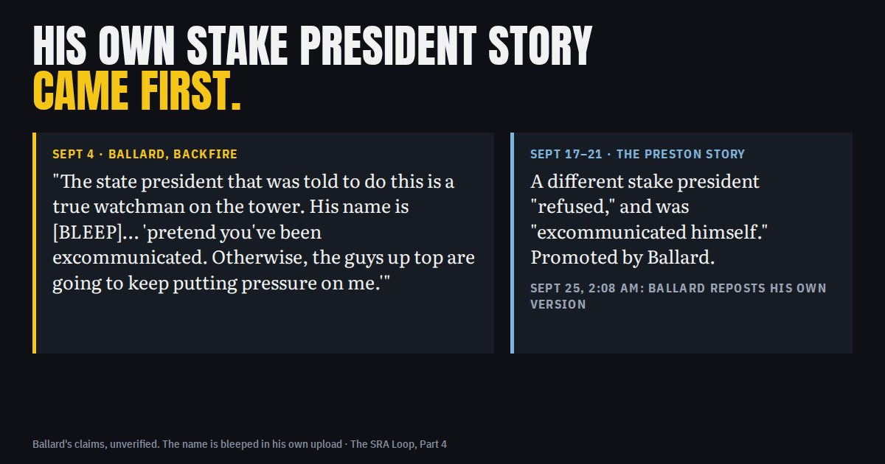
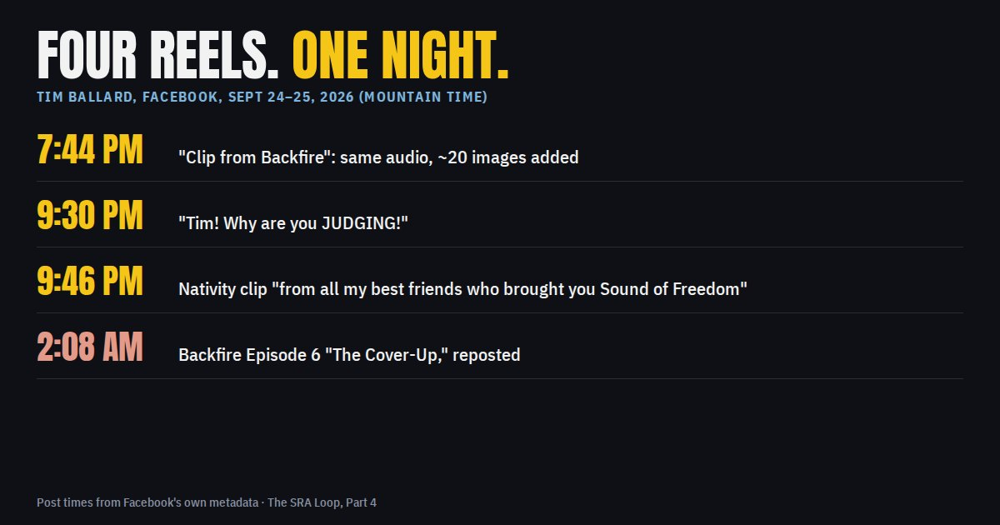

Same words, new pictures
Overnight on September 24–25, Tim Ballard posted four Facebook reels. Two reuse Backfire audio unchanged. One adds images the original never had. The other brings back his own story about a stake president, which he told two weeks before the Preston version.

Four reels, one night
| Posted (MT) | Length | What it is |
|---|---|---|
| Sept 24, 7:44 pm | 5:25 | "Clip from Backfire. Please watch the entire 8 episode series…" (reel) |
| Sept 24, 9:30 pm | 3:11 | "Tim! Why are you JUDGING!" He calls Backfire "the docu-series on my YouTube channel" (reel) |
| Sept 24, 9:46 pm | 2:28 | Nativity clip "from all my best friends who brought you Sound of Freedom" (reel) |
| Sept 25, 2:08 am | 6:16 | "This is Episode 6 of Backfire: 'The Cover-Up'…" (reel) |
Post times are from each video's public Facebook metadata.
Same audio, new pictures
The 7:44 pm "Clip from Backfire" is an unedited, continuous stretch of Backfire, about five minutes starting at 2:16:18 in the September 4 YouTube video. Its audio lines up with the original at a fixed offset from start to finish, and the video underneath is the same edit, burned-in Spanish subtitles included. What changes is what is laid on top. About 20 images appear over the original frames. Here are four of them, each beside the same second of the original:




Other additions include a faceless man in a suit (twice, on "the lawyers"), a "STOP child trafficking" graphic with a crying child, Jesus walking with a child, "ISAIAH" book graphics, a child with a teddy bear, a black-and-white photo of crying children, full-screen rescue footage, and the word "Truth." None of these images are in the original video.
His own stake president story came first

The 2:08 am reel reposts Backfire's "Cover-Up" segment. In it, Ballard tells a story about a stake president:
"Kevin Pearson is still on the throne, but then something happened. He orders a hit on an innocent woman who used to work for me in Provo… The state president that was told to do this is a true watch[man] on the tower. His name is [bleep]. He knows this woman. He calls her and says, you're innocent of this. I'm not going to do anything. But he tells her, functionally, you've got to kind of pretend you've been excommunicated. Otherwise, the guys up top are going to keep putting pressure on me." Backfire, Sept 4, 2026 (~3:15:37); YouTube "Episode 6," Sept 20 (0:15); Facebook repost, Sept 25 2:08 am (0:15)
- It predates the Preston story. The passage is in the September 4 upload. The public claim that Jason Preston's stake president was excommunicated for refusing to act against the Prestons began around September 17 (see Part 1).
- The name is bleeped by Ballard himself. His upload has a 1,000 Hz censor tone at exactly that word.
- The two stories share a shape: pressure from above, a stake president who refuses, an excommunication that is either real or staged, and no name given.
These are Ballard's statements. He gives no name, date, or document for the unnamed former female employee or for the discipline he describes. Nothing here confirms that any of it happened.
Same recording, three uploads
The 2:08 am reel, the YouTube "Episode 6" of September 20, and the September 4 video are one recording. The audio matches at a fixed offset, and the repost is trimmed by a fraction of a second at the start and about a second at the end. The eight YouTube "episodes" are that same September 4 video cut into pieces (see Part 3).
What this page does not claim
It does not claim that Ballard's allegations about anyone are true or false. It does not say who made the added images, or whether the rescue footage or stills are authentic or generated. Those were not checked. It describes what the videos contain and when they were posted.
Cards
